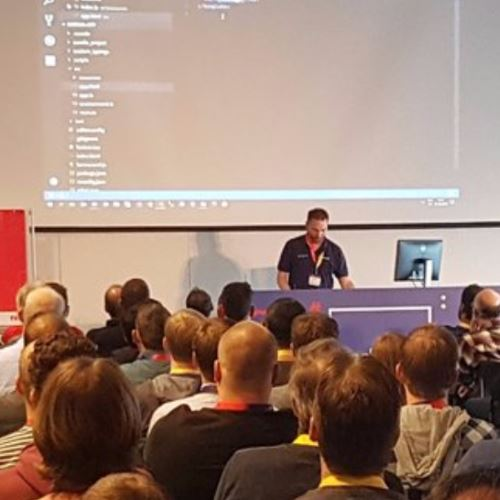

Hi,
Welcome to the Effectory Tech Site. Take a look behind the screens, and discover how our development teams
build the Effectory feedback tools... The tools that empower employees to help their organizations grow and improve!

We love sharing knowledge and meeting you!
We truly believe in sharing knowledge and meeting others in the local tech community. It’s key to personal growth and the best way to keep up with the fast-changing world around us.
In 2016, we started the Aurelia Amsterdam meetup and the dotnet Amsterdam meetup. Not only do we have a great time organizing both, but over the years we've met some of the most amazing people at the sessions. We also try to support other meetups, either through sponsorships or simply by hosting them at our centrally located office. Simply put, we believe in helping the local tech community thrive. You can meet us at tech conferences, or – of course – at one of our meetups! We look forward to chatting with you!
Team Red at their stand upJohannes, Sander, and Roy during the standupJurjen looking at Azure metrics; Sebas and Jimmy pair programmingRoy, Ramon, and Thimo discussing a solutionKurt asking for feedback during the sprint review of team YellowMerel gives feedback during the sprint review of team YellowA discussion about sprint burndown of team YellowJesse, Ramon, Eddy, and Thimo playing a game of cards during lunchTeam Red at their stand up
What are we working on?
We’re currently working on several types of software, used for different purposes. Our main focus is feedback tools... but there’s lots more! Below, you will find a sneak peek of our products. Do you know the techniques needed to build these?
Start a survey
Wouldn’t it be great to be able to create a survey whenever you want to, wherever you want to, and however you want to?
This is what Start a Survey is designed to do. Start a Survey enables the customer to create their own personalized survey. In the first step, they build a questionnaire by selecting questions from our validated library. Then, they select the survey participants and choose the starting and closing dates.
There are a lot of systems behind Start a Survey. To make sure the applications and services are easy to maintain and scale, we are creating (and moving existing applications to) an event-driven microservices architecture. To do this, we get to experiment with and use many innovative technologies. This is a fun but quite challenging project. Each team works independently within their own domain, while maintaining a close collaboration with all other teams to ensure quality of the overall architecture.
Tech stack
Questionaire
Most people would agree that filling in a questionnaire can be tedious and boring. We’re proud to have created a questionnaire design that is fun and easy-to-use, and inspires as many people as possible to participate in our surveys.
The content of the questionnaire is fully customizable for each survey. And to give the participants of the questionnaire a familiar feeling, the logo, background pattern, and colors are also customizable.
Effectory aims to improve all aspects of the work environment. Our employee surveys are most suitable to investigate organization-wide issues, helping our clients improve at a large scale. But a lot can be improved on team level as well. Although the scale may be smaller, the potential for big impact remains. Teamie was designed by Effectory to investigate team dynamics. A tool that enables teams to self-administer targeted surveys, it allows teams to get immediate access to results and helps easily identify points of improvement to work on with our training exercises.
Teamie, as a product, is entirely separate from other Effectory tools. It has its own, intuitive UI designed to make it feel approachable, easy-to-use, and simply fun. It all works effortlessly – Teamie invitation emails are sent automatically, the survey closes automatically when all participants have participated, and the results are calculated, also automatically, the moment the survey closes.
Tech stack
Project center
The Effectory toolbox consists of a wide range of software: CRM, workflow management, questionnaire management, and project management.
The last is crucial to successfully running employee surveys for our clients, and relies on our core backend program, Project Center. The frontend Project Center application, used extensively by our project managers, allows to set the survey language, anonymity rules, and data structures. Project Center also automates a lot of tasks that used to be tedious and manual, such as linking one company data structure to another, which now can be accomplished with one click of a button. Project Center is based on the Angular framework in combination with NGRX, the redux pattern for Angular, which keeps it fast and responsive.
Performance and transactional consistency are key in Project Center: the backend uses the CQRS pattern. This pattern ensures that query requests are easy to implement and tailored to the view. CQRS also allows us to implement the many business rules the entities in the Project Center domain are subject to. The Project Center backend API is a powerful combination of fast and reliable queries, and transactional, domain-driven commands.
But times are changing! And the Effectory development team is making the shift towards microservices. We’re currently rebuilding Project Center into a hub that combines loosely coupled microservices. All this while maintaining performance standards and respecting microservice isolation.
This new Effectory Core Microservice project and Project Center are two challenging pieces of software with massive business impact for Effectory. Both projects pose interesting problems that necessitate creative solutions.
Tech stack
Thinking about joining the team?
Effectory is growing and we want to expand our development department! We’re currently building a new Scrum team to be able to do a lot more work.
Do you want to have a once-in-a-lifetime job experience?
Well, luck is on your side! We have a few positions open.
Check out our vacancies below, and apply if you are interested. Tijmen or Sanne will respond to all applications, and tell you all you need to know.
We are intrigued: join a phone call to further introduce yourself and ask questions
We both think it went well: we now meet in person to get to know each other better. But this is not a standard and boring interview! You get to meet two of your potential colleagues and see what we are working on.
We want to see you in action: you complete a case/assessment from home
We like each other even more: you meet more potential team members for a conversation about the most relevant aspects of the job
The final hurdle: we agree on terms & conditions, we sign, and you start!
We believe employees know best
We believe our employees know best. Based on self-managing and motivated teams, our open work culture allows us to inspire one another, learn from each other, and focus equally on our individual and collective growth. Effectory consists of 200 employees dedicated to improving organizations from within. We know, sounds great. But how does this affect you when you work for Effectory?
Feedback
Every four months, you will invite (at least) four colleagues in your feedback network. You’ll ask feedback on how they think you performed and what you can do to improve. We use our feedback tool to collect the input. The better the feedback, the higher the raise you get at the end of each year!
Making decisions
There is no manager who makes the decisions for the team; the team members have to make them together. And every voice counts! For example, let’s say you want to start working with a new technique. Then it’s up to you to look into it and to share your findings during a knowledge sharing session. If the others are convinced, then the new technique will be adopted.
Team coaches
Every team has a team coach, who guides both the team as a whole and the individual team members. Myrjam is the team coach for our development teams. She helps each teams perform to the best of its ability and helps create an environment where everyone feels comfortable. She also guides our developers in setting goals for themselves and reaching them.
Knowledge sharing
Every two weeks, we organize a knowledge sharing session. In this session, everyone has the opportunity to share new insights and ideas. It’s up to our employees to choose which techniques we want to use in order to build the most innovative feedback tools possible.
What do we offer?
Money, of course. But that is not all. We try to give our employees the optimal environment to do their work.
Here is what we offer:
25 paid vacation days
A piece of the (profit) pie! 10% of our profit (after tax) is divided amongst our employees
We reimburse all your public transport expenses
A laptop and phone
Zwitserleven pension
Trainings, courses, and other learning opportunities
What else?
Working in a beautiful office on one of Amsterdam’s most beautiful canals
A free daily lunch and afternoon snacks prepared by Patrick, our own executive chef
Flexible working hours: you can work between 08:00 and 19:00
The best Friday afternoon drinks in Amsterdam (all paid for!)
Full VIP access to Bonzo, our company boat
How is life at Effectory?
We asked Jesse de Bruijne, Medior Software Developer at Effectory.
When did you start at Effectory?
About three years ago, when I was still studying, a friend brought me in to work 2 days a week. I work full-time since September 2017 and I’m still very happy to be here!
What drives you to be a Software Developer?
What I love about programming is that you have to think logically and solve problems. At Effectory, I can do that while contributing to a product that ultimately helps companies all over the world create a happier workplace for their people.
What does your team look like?
I work in team Yellow, one of the four Scrum teams we have. Our team consists of six full-stack developers. When I joined the team three years ago, I had a lot of knowledge but basically no practical experience. The atmosphere in the team is really great, and the guys helped me out and taught me a lot. We work on a high level, on interesting and challenging projects. We are a self-steering team, which means that we don’t have a manager that decides what we do. We make our own decisions as a team. That gives us a lot of room for creativity and trying to do things in different ways. But it also means that you have to be able to take responsibility for your actions and work independently. But I absolutely love self-steering. From your first day on the job, you have a voice and you are able to shape your work the way you want to. And, on top of that, it is also creates a relaxed atmosphere.
What are you currently working on?
We build innovative survey software. The complexity lies in the highly customizable survey process, which makes our data structure, and the accompanying code, very complex.
What techniques do you use?
As I said earlier, we are all full-stack developers because we believe that you have to be able to do everything. But, of course, everyone has their preference. Mine is front end. I love bringing designs to life and working on what our users see and use.
For front-end development, we use Aurelia/Angular, TypeScript, HTML, and SASS/CSS. But we also do back end work. For this we use .NET Core, SQL Server, Microsoft Azure and IdentityServer. We use Azure to host our services, and currently work a lot with Service Bus for our events. A cool and challenging project that we are working on at the moment is renewing our architecture to an event-driven architecture.
Sounds cool! But how do you keep up?
We try to work with the best and latest techniques. We all have a responsibility to keep up and explore new techniques. We make time to dive into this. Every two weeks we have a knowledge sharing session where we present our findings and talk about new technologies. If the majority thinks that a technology might be useful, then we make a proof of concept or a demo. We also regularly share blogs/videos about interesting tech topics.
What does the development process looks like?
We work with Scrum, meaning we are an agile team. Every morning we have a stand-up, where we talk about what we accomplished the previous day and prioritize the work for the day. We work in two-week sprints and evaluate each sprint in a sprint retrospective. We also host a biweekly sprint review where we present what we accomplished to our stakeholders.
Effectory has set as its mission to be a “once-in-a-lifetime employer”. How do you feel about this?
I think that Effectory does a lot to achieve this mission. Effectory is a good employer, and I think that is why a lot of my teammates have been working here for a long time. For me what makes Effectory special is: the atmosphere, the lunch, the freedom for creativity, the young professional mindset, my teammates, and the beautiful location in the city center of Amsterdam.
Meet our teams
Look at these happy people! They are the ones who build our amazing products. They’re the backbone of Effectory. And hey, you’ll probably notice every team has room for a few more people. Just saying!